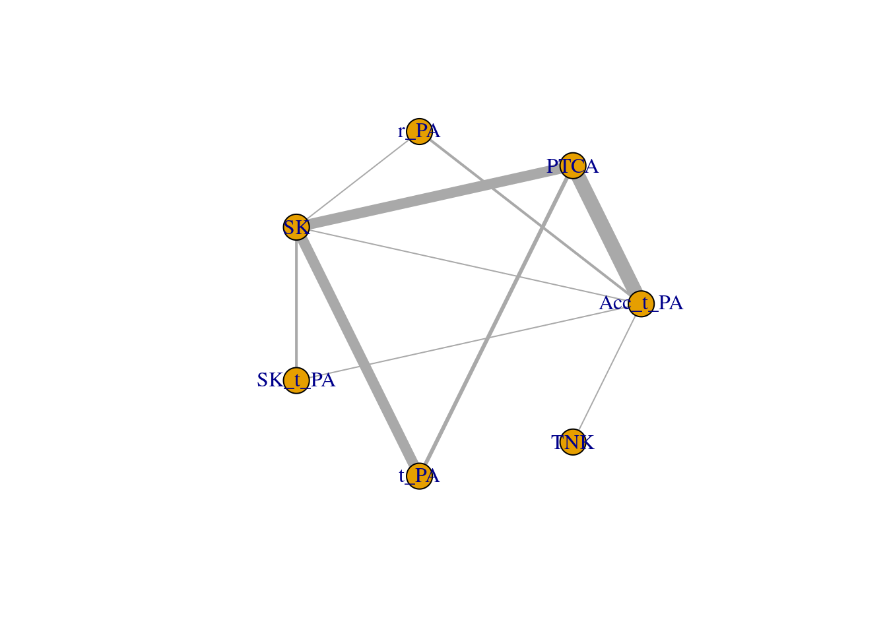
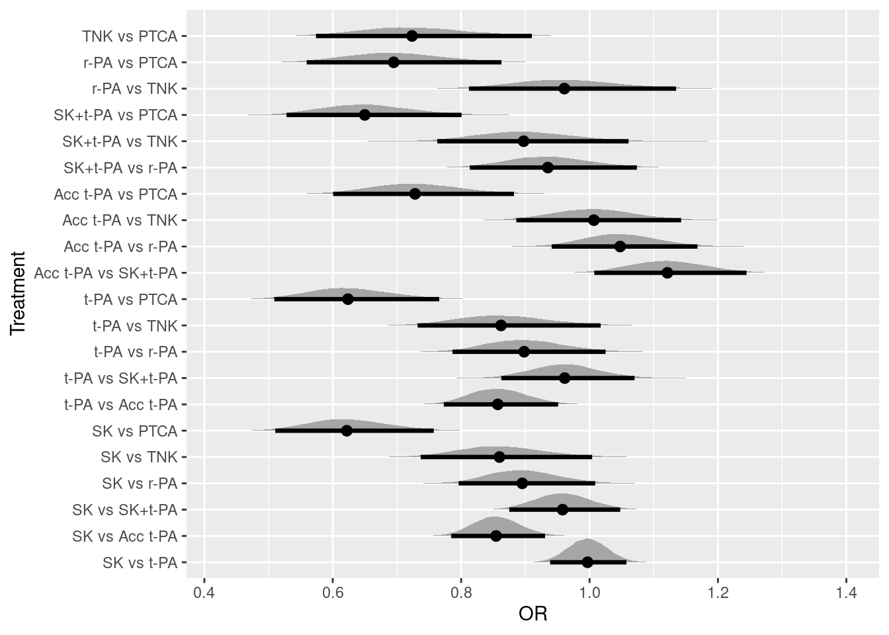
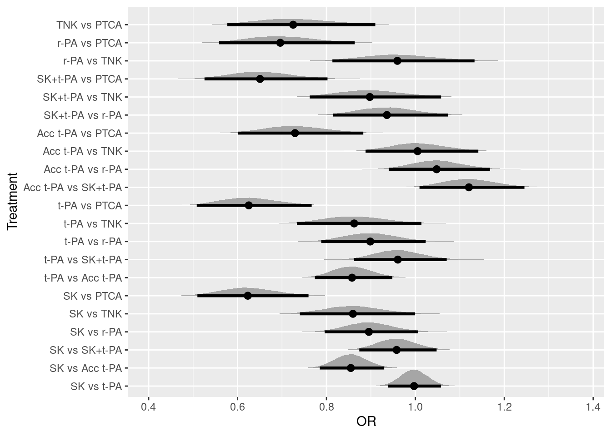
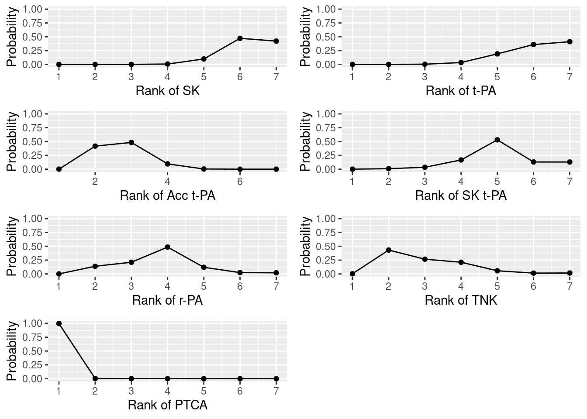

治療Aと治療Bを直接比較した臨床試験の効果を統合するときに使用されるのがメタ分析です。ただ，治療Aと治療B，治療Aと治療Cの直接比較はあるけど，治療Bと治療Cを比較した研究はない（もしくは少ない）状況もあります。その場合に，治療Aと治療B，治療Aと治療Cの直接比較の効果から，治療Bと治療Cの間接比較の効果を検討するネットワークメタ分析という方法があります。以下では，ネットワークメタ分析についてまとめています。
ネットワークメタ分析は，３つ以上の治療の比較が可能なメタ分析です。これまでよく行われていたメタ分析（一対比較のメタ分析）は，２つの治療間の直接比較の結果を統合するものでした（一対比較のベイジアンメタ分析については，こちらを参照ください）。一方，ネットワークメタ分析では，３つ以上の治療について，直接的な比較だけでなく，間接的な比較（別の２つ以上の治療薬の効果から，検討されていない２つの治療薬間の差を推定する）も行って，治療効果の統合をします。ネットワークメタ分析の利点としては，以下の３点があります。
ネットワークメタ分析を学ぶ場合，『Network Meta-Analysis for Decision-Making』](https://www.amazon.co.jp/dp/1118647505/ref=cm_sw_em_r_mt_dp_U_i6l0EbR0Z21F1)は，丁寧な説明がされており，おすすめの書籍です。ただ，記載されているコードはWinBUGSのものです。Mac & Stanユーザーとしては，WinBUGSはきついので，第2章で紹介されている固定効果モデルのネットワークメタ分析をStanコードで書き直したものを以下で説明します。
以下のパッケージを使います。これら一式がインストールされたDockerfileも公開しているので，こちらの記事も参照ください。
library(cmdstanr)
library(tidyverse)
library(loo)
library(rstan)
library(bayesplot)
library(posterior)
library(tidybayes)
library(gemtc)
library(gridExtra)使用するのは，『Network Meta-Analysis for Decision-Making』の２章で紹介されている血栓溶解薬のデータです(Caldwell et la., 2005のデータ)。７つの治療薬について検討した36試験のデータです。
変数名について説明します。studyは研究のID，treatmentは治療の種類，deadは死者数，sampleSizeはその治療に参加した患者数です。baselineは，当該試験のベースラインとなる治療です(今回，SKをリファレンスの治療にします。多く試験ではSKがベースラインになりますが，SKが含まれない試験もあり，その場合は他の薬剤がベースラインになります)。treatmentNameは治療薬名，studyNameは第1著者の姓か研究プロジェクト名， studyYearは論文の出版年です。治療の種類のtreatmentと治療薬名のtreatmentNameの組み合わせは以下になります。
以下を実行して，Rにデータを読み込んでみましょう！
study <- c(1,2,3,4,5,6,7,8,9,10,11,12,13,14,15,16,17,18,19,20,21,22,23,24,25,26,27,28,29,30,31,32,33,34,35,36,1,2,3,4,5,6,7,8,9,10,11,12,13,14,15,16,17,18,19,20,21,22,23,24,25,26,27,28,29,30,31,32,33,34,35,36,1)
treatment <- c(0,0,0,0,0,0,0,0,0,0,0,0,0,0,0,0,0,0,0,1,1,1,2,2,2,2,2,2,2,2,2,2,2,2,2,2,2,1,1,1,1,1,1,1,1,3,4,6,6,6,6,6,6,6,6,6,6,6,4,4,5,6,6,6,6,6,6,6,6,6,6,6,3)
dead <- c(1472,3,12,7,10,887,5,1455,9,4,285,11,1,8,1,4,14,9,42,2,13,2,13,356,522,3,10,40,5,5,2,19,59,5,16,8,652,3,7,4,5,929,2,1418,6,6,270,2,3,5,1,0,7,3,29,3,5,2,7,757,523,1,3,32,5,3,3,20,52,2,12,6,723)
sampleSize <- c(20251,65,159,85,135,10396,63,13780,130,107,3004,149,50,58,53,45,99,41,421,44,200,56,155,4921,8488,55,94,573,75,69,61,419,782,81,226,66,10396,64,157,86,135,10372,59,13746,123,109,3006,152,50,54,47,42,101,46,429,46,195,47,169,10138,8461,55,95,565,75,71,62,421,790,81,225,71,10374)
baseline <- c(0,0,0,0,0,0,0,0,0,0,0,0,0,0,0,0,0,0,0,1,1,1,2,2,2,2,2,2,2,2,2,2,2,2,2,2,0,0,0,0,0,0,0,0,0,0,0,0,0,0,0,0,0,0,0,1,1,1,2,2,2,2,2,2,2,2,2,2,2,2,2,2,0)
treatmentName <- c("SK","SK","SK","SK","SK","SK","SK","SK","SK","SK","SK","SK","SK","SK","SK","SK","SK","SK","SK","t_PA","t_PA","t_PA","Acc_t_PA","Acc_t_PA","Acc_t_PA","Acc_t_PA","Acc_t_PA","Acc_t_PA","Acc_t_PA","Acc_t_PA","Acc_t_PA","Acc_t_PA","Acc_t_PA","Acc_t_PA","Acc_t_PA","Acc_t_PA","Acc_t_PA","t_PA","t_PA","t_PA","t_PA","t_PA","t_PA","t_PA","t_PA","SK_t_PA","r_PA","PTCA","PTCA","PTCA","PTCA","PTCA","PTCA","PTCA","PTCA","PTCA","PTCA","PTCA","r_PA","r_PA","TNK","PTCA","PTCA","PTCA","PTCA","PTCA","PTCA","PTCA","PTCA","PTCA","PTCA","PTCA","SK_t_PA")
studyName <- c("GUSTO-1","ECSG","TIMI-1","PAIMS","White","GISSI-2","Cherng","ISIS-3","CI","KAMIT","INJECT","Zijlstra","Riberio","Grinfeld","Zijlstra","Akhras","Widimsky","DeBoer","Widimsky","DeWood","Grines","Gibbons","RAPID-2","GUSTO-3","ASSENT-2","Ribichini","Garcia","GUSTO-2","Vermeer","Schomig","LeMay","Bonnefoy","Andersen","Kastrati","Aversano","Grines","GUSTO-1","ECSG","TIMI-1","PAIMS","White","GISSI-2","Cherng","ISIS-3","CI","KAMIT","INJECT","Zijlstra","Riberio","Grinfeld","Zijlstra","Akhras","Widimsky","DeBoer","Widimsky","DeWood","Grines","Gibbons","RAPID-2","GUSTO-3","ASSENT-2","Ribichini","Garcia","GUSTO-2","Vermeer","Schomig","LeMay","Bonnefoy","Andersen","Kastrati","Aversano","Grines","GUSTO-1")
studyYear <- c(1993,1985,1987,1989,1989,1990,1992,1992,1993,1991,1995,1993,1993,1996,1997,1997,2000,2002,2002,1990,1993,1993,1996,1997,1999,1996,1997,1997,1999,2000,2001,2002,2002,2002,2002,2002,1993,1985,1987,1989,1989,1990,1992,1992,1993,1991,1995,1993,1993,1996,1997,1997,2000,2002,2002,1990,1993,1993,1996,1997,1999,1996,1997,1997,1999,2000,2001,2002,2002,2002,2002,2002,1993)
# データフレームにして確認
data_net <- tibble(study,treatment,dead,sampleSize,baseline,treatmentName,studyName,studyYear)
data_net## # A tibble: 73 × 8
## study treatment dead sampleSize baseline treatmentName studyName studyYear
## <dbl> <dbl> <dbl> <dbl> <dbl> <chr> <chr> <dbl>
## 1 1 0 1472 20251 0 SK GUSTO-1 1993
## 2 2 0 3 65 0 SK ECSG 1985
## 3 3 0 12 159 0 SK TIMI-1 1987
## 4 4 0 7 85 0 SK PAIMS 1989
## 5 5 0 10 135 0 SK White 1989
## 6 6 0 887 10396 0 SK GISSI-2 1990
## 7 7 0 5 63 0 SK Cherng 1992
## 8 8 0 1455 13780 0 SK ISIS-3 1992
## 9 9 0 9 130 0 SK CI 1993
## 10 10 0 4 107 0 SK KAMIT 1991
## # … with 63 more rows今回のデータのネットワークを書いてみます。以降では，基本的にはStanを使いますが，ネットワークは，JAGSベースのネットワークメタ分析するGeMTCパッケージを使うと簡単にプロットしてくれます。これは便利なパッケージですが，今回はプロットだけに使います。GeMTC用に少しデータセットを変えて，mtc.network()で読み込み，プロットします。
data_net <- data.frame(study,treatmentName,dead,sampleSize)
names(data_net) <- c("study","treatment","responders","sampleSize")
data_net_GeM <- mtc.network(data_net)
plot(data_net_GeM)
以下のような感じです。ネットワークのノード（丸と丸をつなぐ線です）が太いほど，試験数が多いことを表しています。これをみると，SKは他の多くの治療薬と直接的に比較されていますが，TNKはSKとは直接的な比較がなされていないことが分かります。
まず，data{}ブロックにおいて，使用するデータの定義をしています。教科書は行列形式でdeadやsampleSizeを読み込む形式ですが，少し今後の拡張を考えると面倒です(WinBUGSでやりやすいこととStanでやりやすいことは微妙に違ったりします)。まずlong型のデータセットにしてから（上記のデータはすでにそうなっています），各列をStanに読み込ませます。
parameters{}ブロックでは，推定するパラメータとして，mu(各研究におけるベースライン，リファレンスのSKのときもあれば他の治療の時もあります)とd(各治療におけるベースラインに対する相対効果)を準備しています。
model{}ブロックでは，死者数が二項分布に従うとして，死者数が，binomial_logit(試験の参加人数，死亡確率を構成する式)から生成されます。その場合の，死亡確率を構成する式（線形予測子）には，４つのパターンがあります。
四番目が間接比較になります。ネットワークメタ分析では，リファレンスに対する相対効果を推定することで，最終的にランキングなどを作ることができます。この相対効果がdになります。ただ，すべての治療がリファレンスと比較されているわけではないので，間接比較が必要になります。例えば，TNKは，Acc_t_PAとのみ比較をしていますので，間接比較によって，リファレンス(SK)と比較した際のTNKの相対効果も推定する必要があります。TNKによる死亡率は，mu+d(Acc_t_PA→TNK)で計算されます。ただ，今回は，リファレンスからのTNKの相対効果を推定したいので，d(Acc_t_PA→TNK)を，d(SK→TNK)からd(SK→Acc_t_PA)を引くことで計算します（これが上記のd(当該治療)-d(ベースライン)に相当します）。こういう感じで，間接効果も組み込んだ生成モデルを作ることで，間接効果の推定を行います。
なお，dとmuの事前分布としては，幅のひろーい正規分布としました。
generated quantities{}ブロックでは，exp()でdのオッズ比を計算しているのですが，dの可能な組み合わせすべての計算をしています（実際に検討されてない治療間の相対効果も計算している）。その計算が，どうにもStanでスマートにできなかったので，べた書きしています・・・（今後変更できるなら，変更したいです）。最後に，モデル比較用の対数尤度(log_lik)も計算しています。
以下のStanコードを”netmeta_network_fixed_effect.stan”という名前で保存します。
data{
int ld; // length of data
int nct; // number of compared treatment
int ns; // number of study
int study[ld]; // vector of the study id
int treatment[ld]; // vector of the treatment id
int dead[ld]; // vector of the number of dead
int sampleSize[ld]; // vector of the number of patient
int baseline[ld]; // vector of baseline treatment each study
}
parameters{
real d[nct];
real mu[ns];
}
model{
for(i in 1:ld){
if(baseline[i]==0){
if(treatment[i]==0){
dead[i] ~ binomial_logit(sampleSize[i],mu[study[i]]);
}else{
dead[i] ~ binomial_logit(sampleSize[i],mu[study[i]]+d[treatment[i]]);
}
}else{
if(baseline[i]==treatment[i]){
dead[i] ~ binomial_logit(sampleSize[i],mu[study[i]]);
}else{
dead[i] ~ binomial_logit(sampleSize[i],mu[study[i]]+d[treatment[i]]-d[baseline[i]]);
}
}
}
# prior
d~normal(0,10000);
mu~normal(0,10000);
}
generated quantities{
real OR[21];
real log_lik[ld];
OR[1] = exp(d[1]);
OR[2] = exp(d[2]);
OR[3] = exp(d[3]);
OR[4] = exp(d[4]);
OR[5] = exp(d[5]);
OR[6] = exp(d[6]);
OR[7] = exp(d[2]-d[1]);
OR[8] = exp(d[3]-d[1]);
OR[9] = exp(d[4]-d[1]);
OR[10] = exp(d[5]-d[1]);
OR[11] = exp(d[6]-d[1]);
OR[12] = exp(d[3]-d[2]);
OR[13] = exp(d[4]-d[2]);
OR[14] = exp(d[5]-d[2]);
OR[15] = exp(d[6]-d[2]);
OR[16] = exp(d[4]-d[3]);
OR[17] = exp(d[5]-d[3]);
OR[18] = exp(d[6]-d[3]);
OR[19] = exp(d[5]-d[4]);
OR[20] = exp(d[6]-d[4]);
OR[21] = exp(d[6]-d[5]);
for(k in 1:ld){
if(baseline[k]==0){
if(treatment[k]==0){
log_lik[k] = binomial_logit_lpmf(dead[k]|sampleSize[k],mu[study[k]]);
}else{
log_lik[k] = binomial_logit_lpmf(dead[k]|sampleSize[k],mu[study[k]]+d[treatment[k]]);
}
}else{
if(baseline[k]==treatment[k]){
log_lik[k] = binomial_logit_lpmf(dead[k]|sampleSize[k],mu[study[k]]);
}else{
log_lik[k] = binomial_logit_lpmf(dead[k]|sampleSize[k],mu[study[k]]+d[treatment[k]]-d[baseline[k]]);
}
}
}
}
Stanコードが書けましたので，早速，コンパイル＆サンプリングをします。
ld = length(study)
# コンパイル
fit_fixed_net <- cmdstan_model('netmeta_network_fixed_effect.stan')
# サンプリング
fit_fixed_net_mcmc <- fit_fixed_net$sample(
data=list(ld = ld,
nct = 6,
ns = 36,
study = study,
treatment = treatment,
dead = dead,
sampleSize = sampleSize,
baseline=baseline),
seed = 123,
chains = 4,
iter_warmup = 500,
iter_sampling = 5500,
parallel_chains = 4)## Running MCMC with 4 parallel chains...
##
## Chain 1 Iteration: 1 / 6000 [ 0%] (Warmup)
## Chain 1 Iteration: 100 / 6000 [ 1%] (Warmup)
## Chain 1 Iteration: 200 / 6000 [ 3%] (Warmup)
## Chain 1 Iteration: 300 / 6000 [ 5%] (Warmup)
## Chain 1 Iteration: 400 / 6000 [ 6%] (Warmup)
## Chain 1 Iteration: 500 / 6000 [ 8%] (Warmup)
## Chain 1 Iteration: 501 / 6000 [ 8%] (Sampling)
## Chain 2 Iteration: 1 / 6000 [ 0%] (Warmup)
## Chain 2 Iteration: 100 / 6000 [ 1%] (Warmup)
## Chain 2 Iteration: 200 / 6000 [ 3%] (Warmup)
## Chain 2 Iteration: 300 / 6000 [ 5%] (Warmup)
## Chain 2 Iteration: 400 / 6000 [ 6%] (Warmup)
## Chain 3 Iteration: 1 / 6000 [ 0%] (Warmup)
## Chain 3 Iteration: 100 / 6000 [ 1%] (Warmup)
## Chain 3 Iteration: 200 / 6000 [ 3%] (Warmup)
## Chain 3 Iteration: 300 / 6000 [ 5%] (Warmup)
## Chain 3 Iteration: 400 / 6000 [ 6%] (Warmup)
## Chain 3 Iteration: 500 / 6000 [ 8%] (Warmup)
## Chain 3 Iteration: 501 / 6000 [ 8%] (Sampling)
## Chain 3 Iteration: 600 / 6000 [ 10%] (Sampling)
## Chain 3 Iteration: 700 / 6000 [ 11%] (Sampling)
## Chain 4 Iteration: 1 / 6000 [ 0%] (Warmup)
## Chain 4 Iteration: 100 / 6000 [ 1%] (Warmup)
## Chain 4 Iteration: 200 / 6000 [ 3%] (Warmup)
## Chain 4 Iteration: 300 / 6000 [ 5%] (Warmup)
## Chain 4 Iteration: 400 / 6000 [ 6%] (Warmup)
## Chain 4 Iteration: 500 / 6000 [ 8%] (Warmup)
## Chain 4 Iteration: 501 / 6000 [ 8%] (Sampling)
## Chain 4 Iteration: 600 / 6000 [ 10%] (Sampling)
## Chain 4 Iteration: 700 / 6000 [ 11%] (Sampling)
## Chain 1 Iteration: 600 / 6000 [ 10%] (Sampling)
## Chain 1 Iteration: 700 / 6000 [ 11%] (Sampling)
## Chain 1 Iteration: 800 / 6000 [ 13%] (Sampling)
## Chain 1 Iteration: 900 / 6000 [ 15%] (Sampling)
## Chain 1 Iteration: 1000 / 6000 [ 16%] (Sampling)
## Chain 1 Iteration: 1100 / 6000 [ 18%] (Sampling)
## Chain 1 Iteration: 1200 / 6000 [ 20%] (Sampling)
## Chain 1 Iteration: 1300 / 6000 [ 21%] (Sampling)
## Chain 1 Iteration: 1400 / 6000 [ 23%] (Sampling)
## Chain 2 Iteration: 500 / 6000 [ 8%] (Warmup)
## Chain 2 Iteration: 501 / 6000 [ 8%] (Sampling)
## Chain 2 Iteration: 600 / 6000 [ 10%] (Sampling)
## Chain 2 Iteration: 700 / 6000 [ 11%] (Sampling)
## Chain 2 Iteration: 800 / 6000 [ 13%] (Sampling)
## Chain 2 Iteration: 900 / 6000 [ 15%] (Sampling)
## Chain 2 Iteration: 1000 / 6000 [ 16%] (Sampling)
## Chain 2 Iteration: 1100 / 6000 [ 18%] (Sampling)
## Chain 2 Iteration: 1200 / 6000 [ 20%] (Sampling)
## Chain 2 Iteration: 1300 / 6000 [ 21%] (Sampling)
## Chain 3 Iteration: 800 / 6000 [ 13%] (Sampling)
## Chain 3 Iteration: 900 / 6000 [ 15%] (Sampling)
## Chain 3 Iteration: 1000 / 6000 [ 16%] (Sampling)
## Chain 3 Iteration: 1100 / 6000 [ 18%] (Sampling)
## Chain 3 Iteration: 1200 / 6000 [ 20%] (Sampling)
## Chain 3 Iteration: 1300 / 6000 [ 21%] (Sampling)
## Chain 4 Iteration: 800 / 6000 [ 13%] (Sampling)
## Chain 4 Iteration: 900 / 6000 [ 15%] (Sampling)
## Chain 4 Iteration: 1000 / 6000 [ 16%] (Sampling)
## Chain 4 Iteration: 1100 / 6000 [ 18%] (Sampling)
## Chain 4 Iteration: 1200 / 6000 [ 20%] (Sampling)
## Chain 1 Iteration: 1500 / 6000 [ 25%] (Sampling)
## Chain 1 Iteration: 1600 / 6000 [ 26%] (Sampling)
## Chain 1 Iteration: 1700 / 6000 [ 28%] (Sampling)
## Chain 1 Iteration: 1800 / 6000 [ 30%] (Sampling)
## Chain 1 Iteration: 1900 / 6000 [ 31%] (Sampling)
## Chain 1 Iteration: 2000 / 6000 [ 33%] (Sampling)
## Chain 2 Iteration: 1400 / 6000 [ 23%] (Sampling)
## Chain 2 Iteration: 1500 / 6000 [ 25%] (Sampling)
## Chain 2 Iteration: 1600 / 6000 [ 26%] (Sampling)
## Chain 2 Iteration: 1700 / 6000 [ 28%] (Sampling)
## Chain 2 Iteration: 1800 / 6000 [ 30%] (Sampling)
## Chain 2 Iteration: 1900 / 6000 [ 31%] (Sampling)
## Chain 3 Iteration: 1400 / 6000 [ 23%] (Sampling)
## Chain 3 Iteration: 1500 / 6000 [ 25%] (Sampling)
## Chain 3 Iteration: 1600 / 6000 [ 26%] (Sampling)
## Chain 3 Iteration: 1700 / 6000 [ 28%] (Sampling)
## Chain 3 Iteration: 1800 / 6000 [ 30%] (Sampling)
## Chain 3 Iteration: 1900 / 6000 [ 31%] (Sampling)
## Chain 4 Iteration: 1300 / 6000 [ 21%] (Sampling)
## Chain 4 Iteration: 1400 / 6000 [ 23%] (Sampling)
## Chain 4 Iteration: 1500 / 6000 [ 25%] (Sampling)
## Chain 4 Iteration: 1600 / 6000 [ 26%] (Sampling)
## Chain 4 Iteration: 1700 / 6000 [ 28%] (Sampling)
## Chain 1 Iteration: 2100 / 6000 [ 35%] (Sampling)
## Chain 1 Iteration: 2200 / 6000 [ 36%] (Sampling)
## Chain 1 Iteration: 2300 / 6000 [ 38%] (Sampling)
## Chain 1 Iteration: 2400 / 6000 [ 40%] (Sampling)
## Chain 1 Iteration: 2500 / 6000 [ 41%] (Sampling)
## Chain 1 Iteration: 2600 / 6000 [ 43%] (Sampling)
## Chain 2 Iteration: 2000 / 6000 [ 33%] (Sampling)
## Chain 2 Iteration: 2100 / 6000 [ 35%] (Sampling)
## Chain 2 Iteration: 2200 / 6000 [ 36%] (Sampling)
## Chain 2 Iteration: 2300 / 6000 [ 38%] (Sampling)
## Chain 2 Iteration: 2400 / 6000 [ 40%] (Sampling)
## Chain 2 Iteration: 2500 / 6000 [ 41%] (Sampling)
## Chain 3 Iteration: 2000 / 6000 [ 33%] (Sampling)
## Chain 3 Iteration: 2100 / 6000 [ 35%] (Sampling)
## Chain 3 Iteration: 2200 / 6000 [ 36%] (Sampling)
## Chain 3 Iteration: 2300 / 6000 [ 38%] (Sampling)
## Chain 3 Iteration: 2400 / 6000 [ 40%] (Sampling)
## Chain 4 Iteration: 1800 / 6000 [ 30%] (Sampling)
## Chain 4 Iteration: 1900 / 6000 [ 31%] (Sampling)
## Chain 4 Iteration: 2000 / 6000 [ 33%] (Sampling)
## Chain 4 Iteration: 2100 / 6000 [ 35%] (Sampling)
## Chain 4 Iteration: 2200 / 6000 [ 36%] (Sampling)
## Chain 4 Iteration: 2300 / 6000 [ 38%] (Sampling)
## Chain 1 Iteration: 2700 / 6000 [ 45%] (Sampling)
## Chain 1 Iteration: 2800 / 6000 [ 46%] (Sampling)
## Chain 1 Iteration: 2900 / 6000 [ 48%] (Sampling)
## Chain 1 Iteration: 3000 / 6000 [ 50%] (Sampling)
## Chain 1 Iteration: 3100 / 6000 [ 51%] (Sampling)
## Chain 2 Iteration: 2600 / 6000 [ 43%] (Sampling)
## Chain 2 Iteration: 2700 / 6000 [ 45%] (Sampling)
## Chain 2 Iteration: 2800 / 6000 [ 46%] (Sampling)
## Chain 2 Iteration: 2900 / 6000 [ 48%] (Sampling)
## Chain 2 Iteration: 3000 / 6000 [ 50%] (Sampling)
## Chain 3 Iteration: 2500 / 6000 [ 41%] (Sampling)
## Chain 3 Iteration: 2600 / 6000 [ 43%] (Sampling)
## Chain 3 Iteration: 2700 / 6000 [ 45%] (Sampling)
## Chain 3 Iteration: 2800 / 6000 [ 46%] (Sampling)
## Chain 3 Iteration: 2900 / 6000 [ 48%] (Sampling)
## Chain 3 Iteration: 3000 / 6000 [ 50%] (Sampling)
## Chain 4 Iteration: 2400 / 6000 [ 40%] (Sampling)
## Chain 4 Iteration: 2500 / 6000 [ 41%] (Sampling)
## Chain 4 Iteration: 2600 / 6000 [ 43%] (Sampling)
## Chain 4 Iteration: 2700 / 6000 [ 45%] (Sampling)
## Chain 4 Iteration: 2800 / 6000 [ 46%] (Sampling)
## Chain 1 Iteration: 3200 / 6000 [ 53%] (Sampling)
## Chain 1 Iteration: 3300 / 6000 [ 55%] (Sampling)
## Chain 1 Iteration: 3400 / 6000 [ 56%] (Sampling)
## Chain 1 Iteration: 3500 / 6000 [ 58%] (Sampling)
## Chain 1 Iteration: 3600 / 6000 [ 60%] (Sampling)
## Chain 1 Iteration: 3700 / 6000 [ 61%] (Sampling)
## Chain 2 Iteration: 3100 / 6000 [ 51%] (Sampling)
## Chain 2 Iteration: 3200 / 6000 [ 53%] (Sampling)
## Chain 2 Iteration: 3300 / 6000 [ 55%] (Sampling)
## Chain 2 Iteration: 3400 / 6000 [ 56%] (Sampling)
## Chain 2 Iteration: 3500 / 6000 [ 58%] (Sampling)
## Chain 2 Iteration: 3600 / 6000 [ 60%] (Sampling)
## Chain 3 Iteration: 3100 / 6000 [ 51%] (Sampling)
## Chain 3 Iteration: 3200 / 6000 [ 53%] (Sampling)
## Chain 3 Iteration: 3300 / 6000 [ 55%] (Sampling)
## Chain 3 Iteration: 3400 / 6000 [ 56%] (Sampling)
## Chain 3 Iteration: 3500 / 6000 [ 58%] (Sampling)
## Chain 3 Iteration: 3600 / 6000 [ 60%] (Sampling)
## Chain 4 Iteration: 2900 / 6000 [ 48%] (Sampling)
## Chain 4 Iteration: 3000 / 6000 [ 50%] (Sampling)
## Chain 4 Iteration: 3100 / 6000 [ 51%] (Sampling)
## Chain 4 Iteration: 3200 / 6000 [ 53%] (Sampling)
## Chain 4 Iteration: 3300 / 6000 [ 55%] (Sampling)
## Chain 4 Iteration: 3400 / 6000 [ 56%] (Sampling)
## Chain 1 Iteration: 3800 / 6000 [ 63%] (Sampling)
## Chain 1 Iteration: 3900 / 6000 [ 65%] (Sampling)
## Chain 1 Iteration: 4000 / 6000 [ 66%] (Sampling)
## Chain 1 Iteration: 4100 / 6000 [ 68%] (Sampling)
## Chain 1 Iteration: 4200 / 6000 [ 70%] (Sampling)
## Chain 2 Iteration: 3700 / 6000 [ 61%] (Sampling)
## Chain 2 Iteration: 3800 / 6000 [ 63%] (Sampling)
## Chain 2 Iteration: 3900 / 6000 [ 65%] (Sampling)
## Chain 2 Iteration: 4000 / 6000 [ 66%] (Sampling)
## Chain 2 Iteration: 4100 / 6000 [ 68%] (Sampling)
## Chain 2 Iteration: 4200 / 6000 [ 70%] (Sampling)
## Chain 3 Iteration: 3700 / 6000 [ 61%] (Sampling)
## Chain 3 Iteration: 3800 / 6000 [ 63%] (Sampling)
## Chain 3 Iteration: 3900 / 6000 [ 65%] (Sampling)
## Chain 3 Iteration: 4000 / 6000 [ 66%] (Sampling)
## Chain 3 Iteration: 4100 / 6000 [ 68%] (Sampling)
## Chain 4 Iteration: 3500 / 6000 [ 58%] (Sampling)
## Chain 4 Iteration: 3600 / 6000 [ 60%] (Sampling)
## Chain 4 Iteration: 3700 / 6000 [ 61%] (Sampling)
## Chain 4 Iteration: 3800 / 6000 [ 63%] (Sampling)
## Chain 4 Iteration: 3900 / 6000 [ 65%] (Sampling)
## Chain 1 Iteration: 4300 / 6000 [ 71%] (Sampling)
## Chain 1 Iteration: 4400 / 6000 [ 73%] (Sampling)
## Chain 1 Iteration: 4500 / 6000 [ 75%] (Sampling)
## Chain 1 Iteration: 4600 / 6000 [ 76%] (Sampling)
## Chain 1 Iteration: 4700 / 6000 [ 78%] (Sampling)
## Chain 1 Iteration: 4800 / 6000 [ 80%] (Sampling)
## Chain 2 Iteration: 4300 / 6000 [ 71%] (Sampling)
## Chain 2 Iteration: 4400 / 6000 [ 73%] (Sampling)
## Chain 2 Iteration: 4500 / 6000 [ 75%] (Sampling)
## Chain 2 Iteration: 4600 / 6000 [ 76%] (Sampling)
## Chain 2 Iteration: 4700 / 6000 [ 78%] (Sampling)
## Chain 3 Iteration: 4200 / 6000 [ 70%] (Sampling)
## Chain 3 Iteration: 4300 / 6000 [ 71%] (Sampling)
## Chain 3 Iteration: 4400 / 6000 [ 73%] (Sampling)
## Chain 3 Iteration: 4500 / 6000 [ 75%] (Sampling)
## Chain 3 Iteration: 4600 / 6000 [ 76%] (Sampling)
## Chain 3 Iteration: 4700 / 6000 [ 78%] (Sampling)
## Chain 4 Iteration: 4000 / 6000 [ 66%] (Sampling)
## Chain 4 Iteration: 4100 / 6000 [ 68%] (Sampling)
## Chain 4 Iteration: 4200 / 6000 [ 70%] (Sampling)
## Chain 4 Iteration: 4300 / 6000 [ 71%] (Sampling)
## Chain 4 Iteration: 4400 / 6000 [ 73%] (Sampling)
## Chain 1 Iteration: 4900 / 6000 [ 81%] (Sampling)
## Chain 1 Iteration: 5000 / 6000 [ 83%] (Sampling)
## Chain 1 Iteration: 5100 / 6000 [ 85%] (Sampling)
## Chain 1 Iteration: 5200 / 6000 [ 86%] (Sampling)
## Chain 1 Iteration: 5300 / 6000 [ 88%] (Sampling)
## Chain 1 Iteration: 5400 / 6000 [ 90%] (Sampling)
## Chain 2 Iteration: 4800 / 6000 [ 80%] (Sampling)
## Chain 2 Iteration: 4900 / 6000 [ 81%] (Sampling)
## Chain 2 Iteration: 5000 / 6000 [ 83%] (Sampling)
## Chain 2 Iteration: 5100 / 6000 [ 85%] (Sampling)
## Chain 2 Iteration: 5200 / 6000 [ 86%] (Sampling)
## Chain 2 Iteration: 5300 / 6000 [ 88%] (Sampling)
## Chain 3 Iteration: 4800 / 6000 [ 80%] (Sampling)
## Chain 3 Iteration: 4900 / 6000 [ 81%] (Sampling)
## Chain 3 Iteration: 5000 / 6000 [ 83%] (Sampling)
## Chain 3 Iteration: 5100 / 6000 [ 85%] (Sampling)
## Chain 3 Iteration: 5200 / 6000 [ 86%] (Sampling)
## Chain 3 Iteration: 5300 / 6000 [ 88%] (Sampling)
## Chain 4 Iteration: 4500 / 6000 [ 75%] (Sampling)
## Chain 4 Iteration: 4600 / 6000 [ 76%] (Sampling)
## Chain 4 Iteration: 4700 / 6000 [ 78%] (Sampling)
## Chain 4 Iteration: 4800 / 6000 [ 80%] (Sampling)
## Chain 4 Iteration: 4900 / 6000 [ 81%] (Sampling)
## Chain 1 Iteration: 5500 / 6000 [ 91%] (Sampling)
## Chain 1 Iteration: 5600 / 6000 [ 93%] (Sampling)
## Chain 1 Iteration: 5700 / 6000 [ 95%] (Sampling)
## Chain 1 Iteration: 5800 / 6000 [ 96%] (Sampling)
## Chain 1 Iteration: 5900 / 6000 [ 98%] (Sampling)
## Chain 2 Iteration: 5400 / 6000 [ 90%] (Sampling)
## Chain 2 Iteration: 5500 / 6000 [ 91%] (Sampling)
## Chain 2 Iteration: 5600 / 6000 [ 93%] (Sampling)
## Chain 2 Iteration: 5700 / 6000 [ 95%] (Sampling)
## Chain 2 Iteration: 5800 / 6000 [ 96%] (Sampling)
## Chain 2 Iteration: 5900 / 6000 [ 98%] (Sampling)
## Chain 3 Iteration: 5400 / 6000 [ 90%] (Sampling)
## Chain 3 Iteration: 5500 / 6000 [ 91%] (Sampling)
## Chain 3 Iteration: 5600 / 6000 [ 93%] (Sampling)
## Chain 3 Iteration: 5700 / 6000 [ 95%] (Sampling)
## Chain 3 Iteration: 5800 / 6000 [ 96%] (Sampling)
## Chain 4 Iteration: 5000 / 6000 [ 83%] (Sampling)
## Chain 4 Iteration: 5100 / 6000 [ 85%] (Sampling)
## Chain 4 Iteration: 5200 / 6000 [ 86%] (Sampling)
## Chain 4 Iteration: 5300 / 6000 [ 88%] (Sampling)
## Chain 4 Iteration: 5400 / 6000 [ 90%] (Sampling)
## Chain 4 Iteration: 5500 / 6000 [ 91%] (Sampling)
## Chain 1 Iteration: 6000 / 6000 [100%] (Sampling)
## Chain 2 Iteration: 6000 / 6000 [100%] (Sampling)
## Chain 3 Iteration: 5900 / 6000 [ 98%] (Sampling)
## Chain 3 Iteration: 6000 / 6000 [100%] (Sampling)
## Chain 4 Iteration: 5600 / 6000 [ 93%] (Sampling)
## Chain 4 Iteration: 5700 / 6000 [ 95%] (Sampling)
## Chain 4 Iteration: 5800 / 6000 [ 96%] (Sampling)
## Chain 4 Iteration: 5900 / 6000 [ 98%] (Sampling)
## Chain 4 Iteration: 6000 / 6000 [100%] (Sampling)
## Chain 1 finished in 1.1 seconds.
## Chain 2 finished in 1.1 seconds.
## Chain 3 finished in 1.1 seconds.
## Chain 4 finished in 1.2 seconds.
##
## All 4 chains finished successfully.
## Mean chain execution time: 1.1 seconds.
## Total execution time: 1.3 seconds.結果を簡単に確認します。
fit_fixed_net_mcmc$summary()## # A tibble: 137 × 10
## variable mean median sd mad q5 q95 rhat ess_bulk
## <chr> <dbl> <dbl> <dbl> <dbl> <dbl> <dbl> <dbl> <dbl>
## 1 lp__ -37608. -3.76e+4 4.63 4.60 -3.76e+4 -3.76e+4 1.00 8484.
## 2 d[1] -0.00318 -2.99e-3 0.0305 0.0304 -5.35e-2 4.65e-2 1.00 27687.
## 3 d[2] -0.157 -1.57e-1 0.0429 0.0426 -2.28e-1 -8.72e-2 1.00 24297.
## 4 d[3] -0.0435 -4.31e-2 0.0464 0.0464 -1.20e-1 3.28e-2 1.00 31327.
## 5 d[4] -0.111 -1.11e-1 0.0594 0.0591 -2.09e-1 -1.23e-2 1.00 25043.
## 6 d[5] -0.152 -1.51e-1 0.0763 0.0756 -2.78e-1 -2.64e-2 1.00 25586.
## 7 d[6] -0.474 -4.73e-1 0.101 0.101 -6.41e-1 -3.07e-1 1.00 26247.
## 8 mu[1] -2.55 -2.55e+0 0.0258 0.0260 -2.59e+0 -2.50e+0 1.00 26110.
## 9 mu[2] -3.10 -3.08e+0 0.441 0.433 -3.88e+0 -2.43e+0 1.00 40636.
## 10 mu[3] -2.77 -2.76e+0 0.242 0.239 -3.18e+0 -2.39e+0 1.00 44266.
## # … with 127 more rows, and 1 more variable: ess_tail <dbl>見にくいので，一部の結果のみを示します。若干ズレはありますが，教科書とほぼ同じ推定値になりました（関心のあるパラメータのみ掲載）。Rhatからもサンプリングも問題なさそうです。
| mean | sd | Rhat | |
|---|---|---|---|
| d[1] | -0.003 | 0.030 | 1.000 |
| d[2] | -0.157 | 0.043 | 1.000 |
| d[3] | -0.043 | 0.046 | 1.000 |
| d[4] | -0.111 | 0.059 | 1.000 |
| d[5] | -0.152 | 0.076 | 1.000 |
| d[6] | -0.474 | 0.101 | 1.000 |
以下はMCMCについての診断結果です。問題はなさそうです。
fit_fixed_net_mcmc$cmdstan_diagnose()## Processing csv files: /tmp/RtmpWC4k4Y/netmeta_network_fixed_effect-202204010422-1-5c846c.csv, /tmp/RtmpWC4k4Y/netmeta_network_fixed_effect-202204010422-2-5c846c.csv, /tmp/RtmpWC4k4Y/netmeta_network_fixed_effect-202204010422-3-5c846c.csv, /tmp/RtmpWC4k4Y/netmeta_network_fixed_effect-202204010422-4-5c846c.csv
##
## Checking sampler transitions treedepth.
## Treedepth satisfactory for all transitions.
##
## Checking sampler transitions for divergences.
## No divergent transitions found.
##
## Checking E-BFMI - sampler transitions HMC potential energy.
## E-BFMI satisfactory.
##
## Effective sample size satisfactory.
##
## Split R-hat values satisfactory all parameters.
##
## Processing complete, no problems detected.今回は省略をしますが，各種MCMCの収束判断には，以下のようにbayesplotをつかうのが便利です。
fit_fixed_net_mcmc$draws("d[1]") %>%
mcmc_trace()
オッズ比をプロットすると以下のようになります。実際は比較してないペアについても，算出できています。
mcmc_samples = as_draws_df(fit_fixed_mcmc$draws())
fit_fixed_net_mcmc %>%
spread_draws(OR[pair]) %>%
ggplot(aes(x = OR,y = as.factor(pair))) +
stat_halfeye(.width = .95) +
ylab("Treatment") +
scale_y_discrete(breaks = c(1, 2, 3, 4,5,6,7,8,9,10,11,12,13,14,15,16,17,
18,19,20,21),
labels = c("SK vs t-PA","SK vs Acc t-PA","SK vs SK+t-PA",
"SK vs r-PA","SK vs TNK","SK vs PTCA",
"t-PA vs Acc t-PA","t-PA vs SK+t-PA",
"t-PA vs r-PA","t-PA vs TNK","t-PA vs PTCA",
"Acc t-PA vs SK+t-PA","Acc t-PA vs r-PA",
"Acc t-PA vs TNK","Acc t-PA vs PTCA",
"SK+t-PA vs r-PA","SK+t-PA vs TNK",
"SK+t-PA vs PTCA","r-PA vs TNK","r-PA vs PTCA",
"TNK vs PTCA")) ## Warning: `gather_()` was deprecated in tidyr 1.2.0.
## Please use `gather()` instead.
## This warning is displayed once every 8 hours.
## Call `lifecycle::last_lifecycle_warnings()` to see where this warning was generated.
一対比較のベイジアンメタ分析の結果と比べた時，Acc t-PAに対するPTCAの相対効果について，一対比較とネットワークとで比較すると（下表），ネットワークのほうが効果がやや大きくなり（オッズ比が小さくなり），その確信区間が狭くなっていることが分かります。間接効果を含めることで，事後分布の幅が狭くなっており，精度が高くなっていることが分かります。
| mean | sd | |
|---|---|---|
| 一対比較 | 0.798 | 0.095 |
| ネットワーク | 0.732 | 0.072 |
各治療のdが推定できましたので，これを使って，治療のランキングを作ります。サンプリングの結果生じたdのサンプルを使って，一回のサンプリングごとに治療のランキングを計算して，順位ごとに1か0の値を保存していきます。最終的にその平均値を計算することで各治療の順位の確率を計算します。コードが実に汎用性の低い＆冗長なものになっているので，良い案があれば，ご指摘いただけると嬉しいです。
d <- fit_fixed_net_mcmc %>%
spread_draws(d[treatment]) %>%
spread(treatment,d) %>%
rename(
d1 = `1`,d2 = `2`, d3 = `3`, d4 = `4`, d5 = `5`, d6 = `6`
) %>%
mutate(d0 = 0)
calNum <- length(d$d1)
d1_rank <- matrix(0, nrow=calNum, ncol=7)
d2_rank <- matrix(0, nrow=calNum, ncol=7)
d3_rank <- matrix(0, nrow=calNum, ncol=7)
d4_rank <- matrix(0, nrow=calNum, ncol=7)
d5_rank <- matrix(0, nrow=calNum, ncol=7)
d6_rank <- matrix(0, nrow=calNum, ncol=7)
d0_rank <- matrix(0, nrow=calNum, ncol=7)
for(i in 1:calNum){
rk_d1 <- rank(as.matrix(d[i,4:10]))[1]
rk_d2 <- rank(as.matrix(d[i,4:10]))[2]
rk_d3 <- rank(as.matrix(d[i,4:10]))[3]
rk_d4 <- rank(as.matrix(d[i,4:10]))[4]
rk_d5 <- rank(as.matrix(d[i,4:10]))[5]
rk_d6 <- rank(as.matrix(d[i,4:10]))[6]
rk_d0 <- rank(as.matrix(d[i,4:10]))[7]
d1_rank[i,rk_d1] <- 1
d2_rank[i,rk_d2] <- 1
d3_rank[i,rk_d3] <- 1
d4_rank[i,rk_d4] <- 1
d5_rank[i,rk_d5] <- 1
d6_rank[i,rk_d6] <- 1
d0_rank[i,rk_d0] <- 1
}
d1_rank <- as_data_frame(d1_rank)## Warning: `as_data_frame()` was deprecated in tibble 2.0.0.
## Please use `as_tibble()` instead.
## The signature and semantics have changed, see `?as_tibble`.
## This warning is displayed once every 8 hours.
## Call `lifecycle::last_lifecycle_warnings()` to see where this warning was generated.## Warning: The `x` argument of `as_tibble.matrix()` must have unique column names if `.name_repair` is omitted as of tibble 2.0.0.
## Using compatibility `.name_repair`.
## This warning is displayed once every 8 hours.
## Call `lifecycle::last_lifecycle_warnings()` to see where this warning was generated.d2_rank <- as_data_frame(d2_rank)
d3_rank <- as_data_frame(d3_rank)
d4_rank <- as_data_frame(d4_rank)
d5_rank <- as_data_frame(d5_rank)
d6_rank <- as_data_frame(d6_rank)
d0_rank <- as_data_frame(d0_rank)
# SKのランクのプロット
d0_rank_p <- d0_rank %>%
gather(key = rank, value = value) %>%
group_by(rank) %>%
summarise(mean = mean(value),sd = sd(value)) %>%
mutate(rank = 1:7) %>%
ggplot(aes(rank,mean)) +
geom_line() +
geom_point()+
scale_x_continuous(breaks=seq(1,7,by=1),limits=c(1,7)) +
ylim(0,1) +
labs(y="Probability", x="Rank of SK")
# t-PAのランクのプロット
d1_rank_p <- d1_rank %>%
gather(key = rank, value = value) %>%
group_by(rank) %>%
summarise(mean = mean(value),sd = sd(value)) %>%
mutate(rank = 1:7) %>%
ggplot(aes(rank,mean)) +
geom_line() +
geom_point()+
scale_x_continuous(breaks=seq(1,7,by=1),limits=c(1,7)) +
ylim(0,1) +
labs(y="Probability", x="Rank of t-PA")
# Acc t-PAのランクのプロット
d2_rank_p <- d2_rank %>%
gather(key = rank, value = value) %>%
group_by(rank) %>%
summarise(mean = mean(value),sd = sd(value)) %>%
mutate(rank = 1:7) %>%
ggplot(aes(rank,mean)) +
geom_line() +
geom_point()+
ylim(0,1) +
labs(y="Probability", x="Rank of Acc t-PA")
# SK t-PAのランクのプロット
d3_rank_p <- d3_rank %>%
gather(key = rank, value = value) %>%
group_by(rank) %>%
summarise(mean = mean(value),sd = sd(value)) %>%
mutate(rank = 1:7) %>%
ggplot(aes(rank,mean)) +
geom_line() +
geom_point()+
scale_x_continuous(breaks=seq(1,7,by=1),limits=c(1,7)) +
ylim(0,1) +
labs(y="Probability", x="Rank of SK t-PA")
# r-PAのランクのプロット
d4_rank_p <- d4_rank %>%
gather(key = rank, value = value) %>%
group_by(rank) %>%
summarise(mean = mean(value),sd = sd(value)) %>%
mutate(rank = 1:7) %>%
ggplot(aes(rank,mean)) +
geom_line() +
geom_point()+
scale_x_continuous(breaks=seq(1,7,by=1),limits=c(1,7)) +
ylim(0,1) +
labs(y="Probability", x="Rank of r-PA")
# TNKのランクのプロット
d5_rank_p <- d5_rank %>%
gather(key = rank, value = value) %>%
group_by(rank) %>%
summarise(mean = mean(value),sd = sd(value)) %>%
mutate(rank = 1:7) %>%
ggplot(aes(rank,mean)) +
geom_line() +
geom_point()+
scale_x_continuous(breaks=seq(1,7,by=1),limits=c(1,7)) +
ylim(0,1) +
labs(y="Probability", x="Rank of TNK")
# PTCAのランクのプロット
d6_rank_p <- d6_rank %>%
gather(key = rank, value = value) %>%
group_by(rank) %>%
summarise(mean = mean(value),sd = sd(value)) %>%
mutate(rank = 1:7) %>%
ggplot(aes(rank,mean)) +
geom_line() +
geom_point()+
scale_x_continuous(breaks=seq(1,7,by=1),limits=c(1,7)) +
ylim(0,1) +
labs(y="Probability", x="Rank of PTCA")
# プロットを並べる
grid.arrange(d0_rank_p, d1_rank_p, d2_rank_p, d3_rank_p, d4_rank_p, d5_rank_p,d6_rank_p,ncol = 2)
ランキングの結果からは，PTCAが１位というのが分かりますね。
単体では意味がないですが，モデル比較をすることもあるかと思います。上記のStanコードでは対数尤度を計算をしているのでWAICの計算ができます。以下では，mcmc_samplesからlog_likだけ抽出して，マトリックス形式にした上で，looパッケージでWAICを計算しています（マトリックス形式にするのに時間がかかります）。
as_draws_df(fit_fixed_net_mcmc$draws()) %>%
select(starts_with("log_lik")) %>%
as.matrix() %>%
waic()## Warning: Dropping 'draws_df' class as required metadata was removed.## Warning:
## 35 (47.9%) p_waic estimates greater than 0.4. We recommend trying loo instead.##
## Computed from 22000 by 73 log-likelihood matrix
##
## Estimate SE
## elpd_waic -216.5 9.4
## p_waic 29.6 2.1
## waic 433.0 18.8
##
## 35 (47.9%) p_waic estimates greater than 0.4. We recommend trying loo instead.これで，固定効果モデルのネットワークメタ分析をStanで実行できました！今回は，ネットワークメタ分析の推定だけを記事にしましたが，ネットワークメタ分析には，同質性，類似性，一貫性などの前提があります。その前提を確認する必要があります。